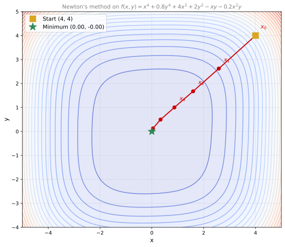
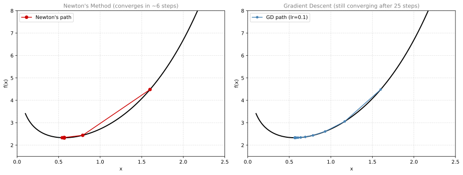
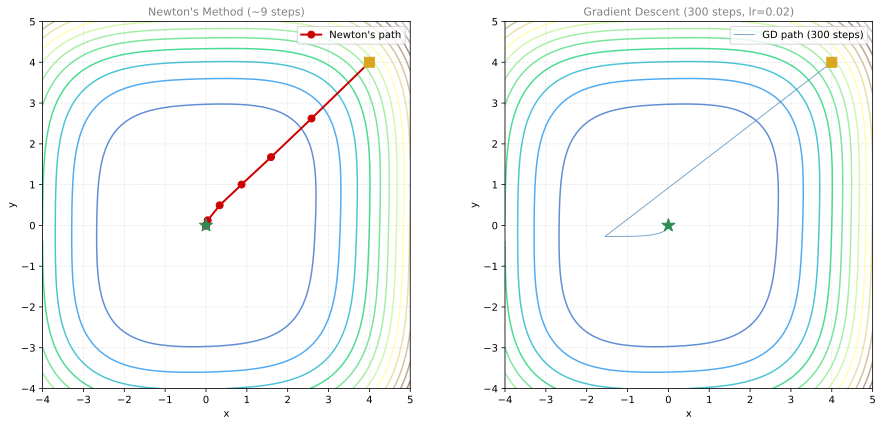

{
const Plotly = await import("https://cdn.jsdelivr.net/npm/plotly.js-dist@2/+esm");
const res = 60;
const x = Array.from({length: res}, (_, i) => -5 + i * 10 / (res - 1));
const y = Array.from({length: res}, (_, i) => -4 + i * 8 / (res - 1));
const z = y.map(yi => x.map(xi =>
Math.pow(xi,4) + 0.8*Math.pow(yi,4) + 4*xi*xi + 2*yi*yi - xi*yi - 0.2*xi*xi*yi
));
const div = document.createElement("div");
div.style.width = "100%";
const surface = {type: 'surface', x, y, z, colorscale: 'Viridis', opacity: 0.9, showscale: false};
const layout = {
scene: {xaxis: {title: 'x'}, yaxis: {title: 'y'}, zaxis: {title: 'f(x,y)'},
camera: {eye: {x: -1.8, y: -1.5, z: 1.0}},
aspectratio: {x: 1.2, y: 1, z: 0.8}},
margin: {l: 0, r: 0, t: 30, b: 0},
title: {text: 'f(x,y) = x⁴ + 0.8y⁴ + 4x² + 2y² − xy − 0.2x²y', font: {size: 12, color: 'gray'}},
height: 500
};
Plotly.default.newPlot(div, [surface], layout, {responsive: true});
return div;
}Newton’s Method for Multiple Variables
calculus
Now that you know the Hessian matrix, we can extend Newton’s method to optimize functions of many variables. The Hessian plays the role that the second…
Now that you know the Hessian matrix, we can extend Newton’s method to optimize functions of many variables. The Hessian plays the role that the second derivative played in one variable.
From One Variable to Many
Recall the one-variable Newton’s method for optimization:
\[x_{k+1} = x_k - \frac{g'(x_k)}{g''(x_k)}\]
We can rewrite this equivalently as:
\[x_{k+1} = x_k - \left(g''(x_k)\right)^{-1} \cdot g'(x_k)\]
Instead of dividing by \(g''\), we multiply by its inverse. In one variable this is the same thing, but the “multiply by inverse” form is what generalizes to multiple variables.
Multivariable Update Rule
For a function \(f(x, y)\) of two variables, replace:
- The current value \(x_k\) with the current point \(\begin{bmatrix} x_k \\ y_k \end{bmatrix}\)
- The first derivative \(g'(x_k)\) with the gradient \(\nabla f(x_k, y_k)\)
- The second derivative inverse \((g'')^{-1}\) with the inverse Hessian \(H^{-1}(x_k, y_k)\)
The update becomes:
\[\begin{bmatrix} x_{k+1} \\ y_{k+1} \end{bmatrix} = \begin{bmatrix} x_k \\ y_k \end{bmatrix} - H^{-1}(x_k, y_k) \cdot \nabla f(x_k, y_k)\]
For \(n\) variables, the same formula applies: a vector of \(n\) coordinates minus the \(n \times n\) inverse Hessian times the \(n \times 1\) gradient vector.
Note
Order matters. You must multiply the inverse Hessian on the left of the gradient: \(H^{-1} \cdot \nabla f\). You cannot write \(\nabla f \cdot H^{-1}\) because a \(2 \times 1\) vector cannot multiply on the left of a \(2 \times 2\) matrix.
Side by Side: One Variable vs Multiple Variables
| One variable | Multiple variables | |
|---|---|---|
| Current point | \(x_k\) | \(\mathbf{x}_k = \begin{bmatrix} x_k \\ y_k \end{bmatrix}\) |
| First derivative | \(g'(x_k)\) | \(\nabla f(\mathbf{x}_k)\) |
| Second derivative | \(g''(x_k)\) | \(H(\mathbf{x}_k)\) (Hessian matrix) |
| Update rule | \(x_{k+1} = x_k - \frac{g'(x_k)}{g''(x_k)}\) | \(\mathbf{x}_{k+1} = \mathbf{x}_k - H^{-1}(\mathbf{x}_k) \cdot \nabla f(\mathbf{x}_k)\) |
Worked Example
Consider the concave-up function:
\[f(x, y) = x^4 + 0.8y^4 + 4x^2 + 2y^2 - xy - 0.2x^2y\]
This function is not quadratic, so the Hessian changes at every point and Newton’s method will need several iterations. Let us find its minimum starting from \((4, 4)\).
The gradient is:
\[\nabla f = \begin{bmatrix} 4x^3 + 8x - y - 0.4xy \\ 3.2y^3 + 4y - x - 0.2x^2 \end{bmatrix}\]
The Hessian is:
\[H = \begin{bmatrix} 12x^2 + 8 - 0.4y & -1 - 0.4x \\ -1 - 0.4x & 9.6y^2 + 4 \end{bmatrix}\]
Iterating from \((4, 4)\)
Start at some point \(\begin{bmatrix} x_0 \\ y_0 \end{bmatrix} = \begin{bmatrix} 4 \\ 4 \end{bmatrix}\)
Evaluate the gradient and Hessian at \((4, 4)\):
\[\nabla f(4,4) = \begin{bmatrix} 4(64) + 32 - 4 - 0.4(4)(4) \\ 3.2(64) + 16 - 4 - 0.2(16) \end{bmatrix} = \begin{bmatrix} 277.6 \\ 213.6 \end{bmatrix}\]
\[H(4,4) = \begin{bmatrix} 12(16) + 8 - 0.4(4) & -1 - 0.4(4) \\ -1 - 0.4(4) & 9.6(16) + 4 \end{bmatrix} = \begin{bmatrix} 198.4 & -2.6 \\ -2.6 & 157.6 \end{bmatrix}\]
Apply the update rule:
\[\begin{bmatrix} x_1 \\ y_1 \end{bmatrix} = \begin{bmatrix} 4 \\ 4 \end{bmatrix} - \begin{bmatrix} 198.4 & -2.6 \\ -2.6 & 157.6 \end{bmatrix}^{-1} \begin{bmatrix} 277.6 \\ 213.6 \end{bmatrix} = \begin{bmatrix} 2.58 \\ 2.62 \end{bmatrix}\]
Already much closer to the minimum. Now we continue iterating:
Newton's method iterations:
k x_k y_k f(x_k, y_k)
------------------------------------------
0 4.000000 4.000000 528.000000
1 2.582739 2.621289 112.423590
2 1.592257 1.674816 24.957298
3 0.870589 1.001821 5.395252
4 0.335194 0.493976 0.821025
5 0.041236 0.125459 0.033267
6 0.000195 0.003010 0.000018
7 -0.000000 0.000000 0.000000
8 0.000000 -0.000000 0.000000 
In about 8 iterations, Newton’s method converges to a point extremely close to the minimum. Compare this to gradient descent, which would need hundreds of steps with careful learning rate tuning.
Lab: Newton’s Method vs Gradient Descent
Let us put both methods side by side in code and see the difference directly.
import numpy as np
import matplotlib.pyplot as plt
from matplotlib.gridspec import GridSpec
%config InlineBackend.figure_formats = ['svg']One Variable
We optimize \(f(x) = e^x - \ln(x)\) with both methods starting from \(x_0 = 1.6\).
def f_1(x):
return np.exp(x) - np.log(x)
def dfdx_1(x):
return np.exp(x) - 1/x
def d2fdx2_1(x):
return np.exp(x) + 1/(x**2)
print(f"f(1.6) = {f_1(1.6):.6f}")
print(f"f'(1.6) = {dfdx_1(1.6):.6f}")
print(f"f''(1.6) = {d2fdx2_1(1.6):.6f}")f(1.6) = 4.483029
f'(1.6) = 4.328032
f''(1.6) = 5.343657def newtons_method(dfdx, d2fdx2, x, num_iterations=100):
path = [x]
for _ in range(num_iterations):
x = x - dfdx(x) / d2fdx2(x)
path.append(x)
return x, path
def gradient_descent(dfdx, x, learning_rate=0.1, num_iterations=100):
path = [x]
for _ in range(num_iterations):
x = x - learning_rate * dfdx(x)
path.append(x)
return x, pathx_initial = 1.6
num_iter = 25
nm_result, nm_path = newtons_method(dfdx_1, d2fdx2_1, x_initial, num_iter)
gd_result, gd_path = gradient_descent(dfdx_1, x_initial, learning_rate=0.1, num_iterations=num_iter)
print(f"Newton's method result: x_min = {nm_result:.10f}")
print(f"Gradient descent result: x_min = {gd_result:.10f}")
print(f"True minimum (omega constant): 0.5671432904...")Newton's method result: x_min = 0.5671432904
Gradient descent result: x_min = 0.5671434157
True minimum (omega constant): 0.5671432904...fig, (ax1, ax2) = plt.subplots(1, 2, figsize=(13, 5))
x = np.linspace(0.1, 2.5, 200)
# Left: Newton's method
ax1.plot(x, f_1(x), 'k', linewidth=2)
ax1.plot(nm_path, [f_1(xi) for xi in nm_path], 'o-', color='#CC0000', markersize=6, label="Newton's path")
ax1.set_title("Newton's Method (converges in ~6 steps)", fontsize=11, color='gray')
ax1.set_xlabel('x')
ax1.set_ylabel('f(x)')
ax1.legend()
ax1.grid(linestyle='--', alpha=0.4)
ax1.set_xlim(0, 2.5)
ax1.set_ylim(1.5, 8)
# Right: Gradient descent
ax2.plot(x, f_1(x), 'k', linewidth=2)
ax2.plot(gd_path, [f_1(xi) for xi in gd_path], 'o-', color='#4682B4', markersize=4, label="GD path (lr=0.1)")
ax2.set_title("Gradient Descent (still converging after 25 steps)", fontsize=11, color='gray')
ax2.set_xlabel('x')
ax2.set_ylabel('f(x)')
ax2.legend()
ax2.grid(linestyle='--', alpha=0.4)
ax2.set_xlim(0, 2.5)
ax2.set_ylim(1.5, 8)
plt.tight_layout()
plt.show()
Newton’s method converges after about 6 iterations. Gradient descent with learning rate 0.1 is still converging after 25 iterations (aiming for 4-5 decimal places of accuracy).
Two Variables
Now compare both methods on \(f(x,y) = x^4 + 0.8y^4 + 4x^2 + 2y^2 - xy - 0.2x^2y\), starting from \((4, 4)\).
def f_2(x, y):
return x**4 + 0.8*y**4 + 4*x**2 + 2*y**2 - x*y - 0.2*x**2*y
def grad_f_2(x, y):
return np.array([[4*x**3 + 8*x - y - 0.4*x*y],
[3.2*y**3 + 4*y - x - 0.2*x**2]])
def hessian_f_2(x, y):
return np.array([[12*x**2 + 8 - 0.4*y, -1 - 0.4*x],
[-1 - 0.4*x, 9.6*y**2 + 4]])def newtons_method_2(grad_f, hessian_f, x_y, num_iterations=25):
path = [x_y.copy()]
for _ in range(num_iterations):
H_inv = np.linalg.inv(hessian_f(x_y[0,0], x_y[1,0]))
g = grad_f(x_y[0,0], x_y[1,0])
x_y = x_y - H_inv @ g
path.append(x_y.copy())
return x_y, path
def gradient_descent_2(grad_f, x_y, learning_rate=0.02, num_iterations=300):
path = [x_y.copy()]
for _ in range(num_iterations):
x_y = x_y - learning_rate * grad_f(x_y[0,0], x_y[1,0])
path.append(x_y.copy())
return x_y, pathx_y_init = np.array([[4.0], [4.0]])
nm2_result, nm2_path = newtons_method_2(grad_f_2, hessian_f_2, x_y_init.copy(), 25)
gd2_result, gd2_path = gradient_descent_2(grad_f_2, x_y_init.copy(), learning_rate=0.02, num_iterations=300)
print(f"Newton's method result: ({nm2_result[0,0]:.10f}, {nm2_result[1,0]:.10f})")
print(f"Gradient descent result: ({gd2_result[0,0]:.10f}, {gd2_result[1,0]:.10f})")
print(f"\nNewton's method converges in ~9 iterations.")
print(f"Gradient descent needs 300 iterations with lr=0.02 (and diverges with lr=0.03).")Newton's method result: (0.0000000000, 0.0000000000)
Gradient descent result: (-0.0000000000, -0.0000000000)
Newton's method converges in ~9 iterations.
Gradient descent needs 300 iterations with lr=0.02 (and diverges with lr=0.03).fig, (ax1, ax2) = plt.subplots(1, 2, figsize=(13, 6))
# Contour grid
x = np.linspace(-4, 5, 100)
y = np.linspace(-4, 5, 100)
X, Y = np.meshgrid(x, y)
Z = f_2(X, Y)
# Left: Newton's method
ax1.contour(X, Y, Z, levels=18, cmap='terrain', linewidths=1.5, alpha=0.7)
nm2_pts = np.array(nm2_path).reshape(-1, 2)
ax1.plot(nm2_pts[:10, 0], nm2_pts[:10, 1], 'o-', color='#CC0000', markersize=7, linewidth=2, label="Newton's path")
ax1.plot(4, 4, 's', color='#DAA520', markersize=10)
ax1.plot(0, 0, '*', color='#2E8B57', markersize=14)
ax1.set_title("Newton's Method (~9 steps)", fontsize=11, color='gray')
ax1.set_xlabel('x')
ax1.set_ylabel('y')
ax1.set_xlim(-4, 5)
ax1.set_ylim(-4, 5)
ax1.set_aspect('equal')
ax1.legend()
ax1.grid(linestyle='--', alpha=0.3)
# Right: Gradient descent
ax2.contour(X, Y, Z, levels=18, cmap='terrain', linewidths=1.5, alpha=0.7)
gd2_pts = np.array(gd2_path).reshape(-1, 2)
ax2.plot(gd2_pts[:, 0], gd2_pts[:, 1], '-', color='#4682B4', linewidth=1, alpha=0.7, label="GD path (300 steps)")
ax2.plot(gd2_pts[0, 0], gd2_pts[0, 1], 's', color='#DAA520', markersize=10)
ax2.plot(gd2_pts[-1, 0], gd2_pts[-1, 1], '*', color='#2E8B57', markersize=14)
ax2.set_title("Gradient Descent (300 steps, lr=0.02)", fontsize=11, color='gray')
ax2.set_xlabel('x')
ax2.set_ylabel('y')
ax2.set_xlim(-4, 5)
ax2.set_ylim(-4, 5)
ax2.set_aspect('equal')
ax2.legend()
ax2.grid(linestyle='--', alpha=0.3)
plt.tight_layout()
plt.show()
Takeaways
| Newton’s Method | Gradient Descent | |
|---|---|---|
| Convergence | Very fast (~9 steps) | Slow (300+ steps) |
| Learning rate | Not needed | Must be tuned carefully |
| Cost per step | Expensive (invert Hessian) | Cheap (just gradient) |
| Risk | Works well for smooth functions | May diverge with bad learning rate |
Newton’s method converges much faster, but each step requires computing and inverting the Hessian matrix. For problems with thousands of parameters (like neural networks), this inversion is prohibitively expensive, which is why gradient descent (and its variants like Adam) remain dominant in deep learning.